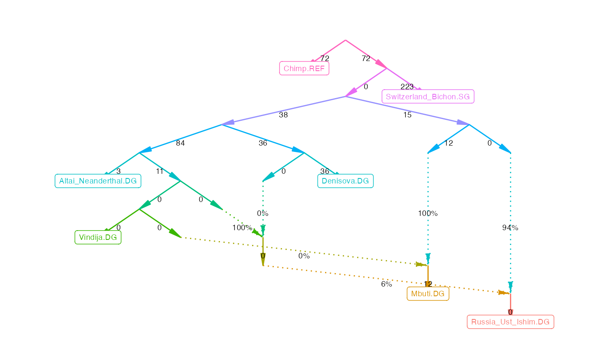
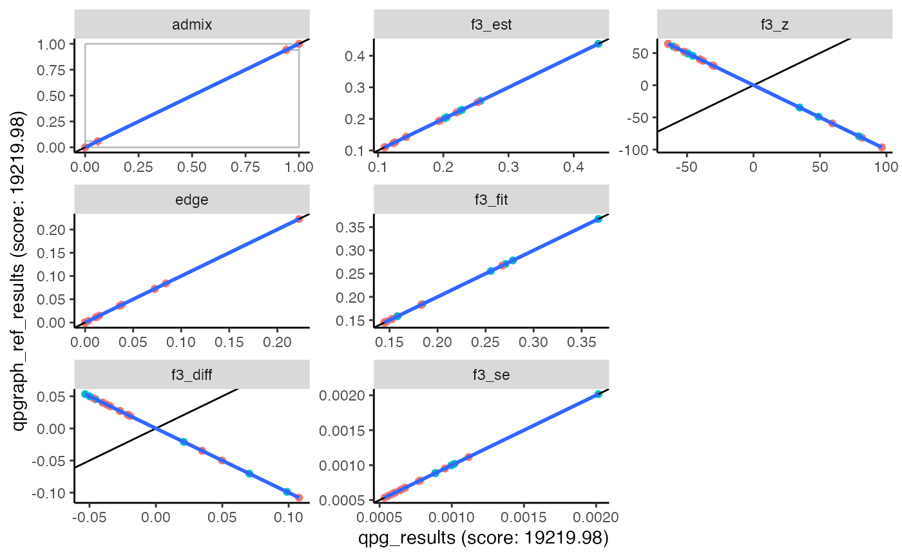

This tutorial gives an overview of the basic workflow for computing f-statistics, and for using qpWave, qpAdm, and qpGraph. Documentation for each ADMIXTOOLS 2 function can be found under Reference, and more detailed information about specific topics under Articles.
For the examples here and on the other pages, the following R packages need to be loaded.
This tutorial focuses on the R command line interface of ADMIXTOOLS 2. Some basic familiarity with R is helpful for using ADMIXTOOLS 2, but not required. If you are not familiar with R, have a look at the browser application. To launch it, open R and type the following command:
admixtools::run_shiny_admixtools()You can also check out these Recipes, which contain code that you should be able to copy and paste to get the results you want.
ADMIXTOOLS is a set of programs used to infer population histories from genetic data. The main use cases are:
All of this is based on f-statistics (\(f_2\), \(f_3\), and \(f_4\)), and all f-statistics can be derived from \(f_2\) statistics.
Because of this, ADMIXTOOLS 2 divides the computations into two steps:
This page shows how standard ADMIXTOOLS analyses can be conducted in ADMIXTOOLS 2. In addition to that, ADMIXTOOLS 2 introduces a range of new methods, mostly focused on admixture graphs, which are intended to make analyses simpler, faster, and most importantly, more robust. These methods focus on quantifying variability by resampling SNPs, automated exploration of graph topologies, and simulating data under admixture graphs. They are described here.
\(f_2\), \(f_3\), and \(f_4\) describe how populations are related to one another. All ADMIXTOOLS programs are based on these f-statistics. Here, we briefly define them and describe how to compute them. Two excellent papers on f-statistics can be found here and here.
\(f_2\) measures the amount of genetic drift that separates two populations. It is the expected squared difference in allele frequencies and can be estimated across \(M\) SNPs as:
\[f_2(A,B) = \frac{1}{M} \sum_{j=1}^M(a_{j} - b_{j})^2\] \(A\) and \(B\) are populations, and \(a\) and \(b\) are their allele frequencies at SNP \(j\).
In practice, the estimation of \(f_2\) is more complicated than shown here, because it needs to account for low sample counts, missing data, and differences in ploidy. This is described here.
The real strength of f-statistics based methods comes from combining \(f_2\)-statistics into \(f_3\)-statistics and \(f_4\)-statistics.
\(f_4\) measures the amount of drift that is shared between two population pairs. It is the covariance of allele frequency differences in each pair, and at the same time the sum of four \(f_2\)-statistics: \[ \begin{equation} \begin{aligned} f_4(A, B; C, D) &= \frac{1}{M}\sum_{j=1}^M(a_{j} - b_{j})(c_{j} - d_{j}) \\ &= \frac{1}{2}(f_2(A, D) + f_2(B, C) - f_2(A, C) - f_2(B, D) ) \label{eq:f42} \end{aligned} \end{equation} \] If \(A\) and \(B\) form a clade relative to \(C\) and \(D\), there should not be any correlation in the allele frequency differences \(A\) - \(B\) and \(C\) - \(D\), so \(f_4(A, B; C, D)\) should be zero. If \(f_4(A, B; C, D)\) is significantly different from zero, it suggests that \(A\) and \(B\) are not a clade relative to \(C\) and \(D\).
Like \(f_4\), \(f_3\) is the covariance of allele frequency differences between two pairs of populations. The difference is that in \(f_3\), one population is the same on both sides. \(f_3\) is thus a special case of \(f_4\).
\[ \begin{aligned} f_3(A; B, C) &= f_4(A, B; A, C) \\ &= \frac{1}{2} (f_2(A, B) + f_2(A, C) - f_2(B, C)) \end{aligned} \]
If \(f_3(A; B, C)\) is negative, it means that the more similar allele frequencies are between \(A\) and \(B\), the more different they are between \(A\) and \(C\), which suggests that \(A\) is admixed between \(B\) and \(C\), or populations close to them.
\(f_3\) and \(f_4\) partition genetic drift into a component that is specific to single populations and a component that is shared between two pairs of populations. By measuring only the shared drift between pairs of populations, we can make conclusive statements about their relationships. Methods such as PCA and ADMIXTURE do not exclude non-shared drift, and therefore don’t produce results that can be interpreted as unambiguously. For example, if \(f_3(A; B, C)\) is negative, this is conclusive evidence that \(A\) is admixed between \(B\) and \(C\). In that case we would expect \(A\) to fall in between \(B\) and \(C\) in PC space. However, the same PCA pattern could be the results of a range of other demographic histories (for example, \(A\) could be ancestral to \(B\) and \(C\)).
In ADMIXTOOLS 2, \(f_2\)-statistics are the foundation for all further analyses. They can be computed from genotype data and saved to disk with this command:
prefix = '/path/to/geno'
my_f2_dir = '/store/f2data/here/'
extract_f2(prefix, my_f2_dir)This will look for genotype files in packedancestrymap or
PLINK format, compute allele frequencies and blocked \(f_4\)-statistics for all pairs of
populations defined in the .ind or .fam file,
and write them to my_f2_dir. It is also possible to extract
only a subset of the samples or populations by passing IDs to the
inds and pops arguments in
extract_f2(). To get a description of the arguments and to
see examples of how to use it, type
?extract_f2By default, extract_f2() will be very cautious and
exclude all SNPs which are missing in any population
(maxmiss = 0). If you lose too many SNPs this way, you can
either
maxmiss parameter
(maxmiss = 1 means no SNPs will be excluded).The advantages and disadvantages of the different approaches are
described here.
Briefly, when running qpadm() and qpdstat() it
can be better to choose the safer but slower options 1 and 2, while for
qpgraph(), which is not centered around hypothesis testing,
it is usually fine choose option 3. Since the absolute difference in
f-statistics between these approaches is usually small, it can
also make sense to use option 3 for exploratory analyses, and confirm
key results using options 1 or 2.
Once extract_f2() has finished, \(f_2\)-statistics for the populations of
interest can be loaded using f2_from_precomp():
f2_blocks = f2_from_precomp(my_f2_dir)Or you can load only a subset of the populations:
mypops = c('Denisova.DG', 'Altai_Neanderthal.DG', 'Vindija.DG')
f2_blocks = f2_from_precomp(my_f2_dir, pops = mypops)If your data is so small that computing \(f_2\)-statistics doesn’t take very long,
you can skip writing the data to disk with extract_f2() and
do everything in one step using f2_from_geno():
f2_blocks = f2_from_geno(my_f2_dir, pops = mypops)f2_blocks is now a 3d-array with \(f_2\)-statistics for each population pair
along dimensions 1 and 2, and each SNP block along the 3rd
dimension.
dim(f2_blocks)## [1] 7 7 708The purpose of having separate estimates for each SNP block is to compute jackknife or bootstrap standard errors for f-statistics, and for any statistics derived from them.
f2_blocks can be used like this:
f2_blocks[,,1] # f2-statistics of the 1st SNP block
apply(f2_blocks, 1:2, mean) # average across all blocks
f2_blocks[pop1, pop2, ] # f2(pop1, pop2) for all blocksThe names along the 3rd dimension contain the SNP block lengths:
block_lengths = parse_number(dimnames(f2_blocks)[[3]])
head(block_lengths)## [1] 424 772 795 835 574 842To see the total number of SNPs across all blocks, you can use
count_snps()
count_snps(f2_blocks)## [1] 780009If you want to try any of this without extracting and loading your
own \(f_2\)-statistics, you can instead
use example_f2_blocks which becomes available after running
library(admixtools).
More information on f-statistics in ADMIXTOOLS 2
There are three main uses of \(f_3\)-statistics:
The original ADMIXTOOLS program for computing \(f_3\)-statistics is called qp3Pop. In ADMIXTOOLS 2, you can compute \(f_3\)-statistics like this:
pop1 = 'Denisova.DG'
pop2 = c('Altai_Neanderthal.DG', 'Vindija.DG')
pop3 = c('Chimp.REF', 'Mbuti.DG', 'Russia_Ust_Ishim.DG')
qp3pop(f2_blocks, pop1, pop2, pop3)Or, equivalently
f3(f2_blocks, pop1, pop2, pop3)## # A tibble: 6 × 7
## pop1 pop2 pop3 est se z p
## <chr> <chr> <chr> <dbl> <dbl> <dbl> <dbl>
## 1 Denisova.DG Altai_Neanderthal.DG Chimp.REF 0.0591 5.98e-4 98.7 0
## 2 Denisova.DG Altai_Neanderthal.DG Mbuti.DG 0.0720 6.47e-4 111. 0
## 3 Denisova.DG Altai_Neanderthal.DG Russia_Ust_Ishim.… 0.0742 7.02e-4 106. 0
## 4 Denisova.DG Vindija.DG Chimp.REF 0.0594 5.92e-4 100. 0
## 5 Denisova.DG Vindija.DG Mbuti.DG 0.0724 6.34e-4 114. 0
## 6 Denisova.DG Vindija.DG Russia_Ust_Ishim.… 0.0750 6.96e-4 108. 0This will compute \(f_3\)-statistics
for all combinations of pop1, pop2, and
pop3. f3(f2_blocks) will compute all possible
combinations (which can be a large number). If only pop1 is
supplied, all combinations of populations in pop1 will be
computed.
The original ADMIXTOOLS program for computing \(f_4\)-statistics is called
qpDstat. As the name suggests, it computes
D-statistics by default. To get \(f_4\)-statistics instead, the
f4mode argument needs to set to YES. In
ADMIXTOOLS 2, almost everything starts with \(f_2\)-statistics, so the
qpdstat/f4 function computes \(f_4\)-statistics by default.
pop4 = 'Switzerland_Bichon.SG'
f4(f2_blocks, pop1, pop2, pop3, pop4)
qpdstat(f2_blocks, pop1, pop2, pop3, pop4)
# two names for the same function## # A tibble: 6 × 8
## pop1 pop2 pop3 pop4 est se z p
## <chr> <chr> <chr> <chr> <dbl> <dbl> <dbl> <dbl>
## 1 Denisova.DG Altai_Neanderthal.DG Chim… Swit… 1.50e-2 4.64e-4 32.3 6.06e-229
## 2 Denisova.DG Altai_Neanderthal.DG Mbut… Swit… 2.03e-3 3.53e-4 5.75 8.85e- 9
## 3 Denisova.DG Altai_Neanderthal.DG Russ… Swit… -2.17e-4 3.73e-4 -0.580 5.62e- 1
## 4 Denisova.DG Vindija.DG Chim… Swit… 1.54e-2 4.78e-4 32.2 5.81e-228
## 5 Denisova.DG Vindija.DG Mbut… Swit… 2.33e-3 3.63e-4 6.42 1.40e- 10
## 6 Denisova.DG Vindija.DG Russ… Swit… -2.40e-4 3.87e-4 -0.620 5.35e- 1The differences between \(f_4\)-statistics and D-statistics
are usually negligible. However, it is still possible to compute
D-statistics in ADMIXTOOLS 2, by providing genotype
data as the first argument, and setting f4mode = FALSE:
prefix = '/path/to/geno'
f4(prefix, pop1, pop2, pop3, pop4, f4mode = FALSE)Computing \(f_4\)- or D-statistics from genotype data directly is slower, but it has the advantage that it avoids any problems that may arise from large amounts of missing data. More on this here.
\(F_{ST}\) is closely related to
\(f_2\), but unlike \(f_2\), it doesn’t function as a building
block for other tools in ADMIXTOOLS 2. However, it is the most
widely used metric to estimate the genetic distance between populations.
Running extract_f2() will create files which don’t only
contain \(f_2\) estimates for each
population pair, but also separate \(F_{ST}\) estimates. The function
fst() can either read these pre-computed estimates, or
compute them directly from genotype files:
fst(my_f2_dir)To estimate \(F_{ST}\) without bias,
we need at least two independent observations in each population. With
pseudohaploid data, we only get one independent observation per sample,
and so for populations consisting of only one pseudohaploid sample,
\(F_{ST}\) cannot be estimated without
bias. If we want to ignore that bias and get estimates anyway, we can
pretend the pseudohaploid samples are actually diploid using the option
adjust_pseudohaploid = FALSE.
fst(prefix, pop1 = "Altai_Neanderthal.DG", pop2 = c("Denisova.DG", "Vindija.DG"),
adjust_pseudohaploid = FALSE)qpWave and qpAdm are two programs with different
goals - qpWave is used for estimating the number of admixture
events, and qpAdm is used for estimating admixture weights -
but they perform almost the same computations. The key difference is
that qpWave compares two sets of populations (left
and right), while qpAdm is tests how a single
target population (which can be one of the
left populations) relates to left and
right. In ADMIXTOOLS 2, both qpadm()
and qpwave()require at least three arguments:
qpadm() additionally requires a target
population as the 4th argument, which will be modeled as a mixture of
left populations.
left = c('Altai_Neanderthal.DG', 'Vindija.DG')
right = c('Chimp.REF', 'Mbuti.DG', 'Russia_Ust_Ishim.DG', 'Switzerland_Bichon.SG')
target = 'Denisova.DG'
pops = c(left, right, target)Both functions will return \(f_4\)-statistics, and a data frame that shows how well the \(f_4\)-matrix can be approximated by lower rank matrices. The last line tests for rank 0, which is equivalent to testing whether the left populations form a clade with respect to the right populations.
results = qpwave(f2_blocks, left, right)
results$f4## # A tibble: 3 × 8
## pop1 pop2 pop3 pop4 est se z p
## <chr> <chr> <chr> <chr> <dbl> <dbl> <dbl> <dbl>
## 1 Altai_Neanderthal.DG Vindija.DG Chimp.REF Mbuti… 1.24e-4 1.35e-4 0.920 0.358
## 2 Altai_Neanderthal.DG Vindija.DG Chimp.REF Russi… 4.45e-4 1.64e-4 2.72 0.00653
## 3 Altai_Neanderthal.DG Vindija.DG Chimp.REF Switz… 4.22e-4 1.72e-4 2.45 0.0144
results$rankdrop## # A tibble: 1 × 7
## f4rank dof chisq p dofdiff chisqdiff p_nested
## <int> <int> <dbl> <dbl> <int> <dbl> <dbl>
## 1 0 3 11.9 0.00768 NA NA NAqpadm() will also compute admixture weights and nested
models:
fit, in the second column.
results = qpadm(f2_blocks, left, right, target)
results$weights## # A tibble: 2 × 5
## target left weight se z
## <chr> <chr> <dbl> <dbl> <dbl>
## 1 Denisova.DG Altai_Neanderthal.DG 49.6 23.3 2.13
## 2 Denisova.DG Vindija.DG -48.6 23.3 -2.08
results$popdrop## # A tibble: 3 × 13
## pat wt dof chisq p f4rank Altai_Neanderthal.DG Vindija.DG
## <chr> <dbl> <dbl> <dbl> <dbl> <dbl> <dbl> <dbl>
## 1 00 0 2 7.15 0.0280 1 49.6 -48.6
## 2 01 1 3 11412. 0 0 1 NA
## 3 10 1 3 11449. 0 0 NA 1
## # ℹ 5 more variables: feasible <lgl>, best <lgl>, dofdiff <dbl>,
## # chisqdiff <dbl>, p_nested <dbl>There are several functions that can be used to run many qpWave or qpAdm models at the same time.
qpwave_pairs() forms all pairs of left
populations and tests whether they form a clade with respect to the
right populations.
qpwave_pairs(f2_blocks, left = c(target, left), right = right)## # A tibble: 6 × 4
## pop1 pop2 chisq p
## <chr> <chr> <dbl> <dbl>
## 1 Altai_Neanderthal.DG Denisova.DG 1507. 0
## 2 Altai_Neanderthal.DG Vindija.DG 11.9 0.00768
## 3 Denisova.DG Altai_Neanderthal.DG 1507. 0
## 4 Denisova.DG Vindija.DG 1510. 0
## 5 Vindija.DG Altai_Neanderthal.DG 11.9 0.00768
## 6 Vindija.DG Denisova.DG 1510. 0qpadm_rotate() tests many qpadm() models at
a time. For each model, the leftright populations will be
split into two groups: The first group will be the left
populations passed to qpadm(), while the second group will
be added to rightfix and become the set of right
populations. By default, this function will only compute p-values but
not weights for each model (which makes it faster). If you want the full
output for each model, set full_results = TRUE.
qpadm_rotate(f2_blocks, leftright = pops[3:7], target = pops[1], rightfix = pops[1:2])## ℹ Evaluating 25 models...
## ## # A tibble: 25 × 7
## left right f4rank dof chisq p feasible
## <list> <list> <dbl> <dbl> <dbl> <dbl> <lgl>
## 1 <chr [1]> <chr [6]> 0 5 26194. 0 TRUE
## 2 <chr [1]> <chr [6]> 0 5 53965. 0 TRUE
## 3 <chr [1]> <chr [6]> 0 5 43564. 0 TRUE
## 4 <chr [1]> <chr [6]> 0 5 54909. 0 TRUE
## 5 <chr [1]> <chr [6]> 0 5 13167. 0 TRUE
## 6 <chr [2]> <chr [5]> 1 3 10602. 0 FALSE
## 7 <chr [2]> <chr [5]> 1 3 13506. 0 FALSE
## 8 <chr [2]> <chr [5]> 1 3 13447. 0 FALSE
## 9 <chr [2]> <chr [5]> 1 3 72.2 1.46e-15 FALSE
## 10 <chr [2]> <chr [5]> 1 3 4030. 0 FALSE
## # ℹ 15 more rowsSwapping some populations between the left and the
right set is one common way to run multiple
qpadm() models. There is also a more general function, in
which you can specify any models that you want to run. This is faster
than looping over several calls to the qpadm() function, in
particular when reading data from a genotype matrix directly, because it
re-uses f4-statistics.
To specify the qpadm() models you want to run, you need
to make a data frame with columns left, right,
and target, where each model is in a different row.
models = tibble(
left = list(pops[1:2], pops[3]),
right = list(pops[4:6], pops[1:2]),
target = c(pops[7], pops[7]))
results = qpadm_multi('/my/geno/prefix', models)## ℹ Running models...
## The output is a list where each item is the result from one model. The following command would combine the weights for all models into a new data frame:
## # A tibble: 3 × 6
## model target left weight se z
## <chr> <chr> <chr> <dbl> <dbl> <dbl>
## 1 1 Denisova.DG Altai_Neanderthal.DG 7.92 2.44e+ 0 3.25e 0
## 2 1 Denisova.DG Vindija.DG -6.92 2.44e+ 0 -2.84e 0
## 3 2 Denisova.DG Chimp.REF 1 1.78e-13 5.63e12Single \(f_3\)- and \(f_4\)-statistics can tell us how three or four populations are related to each other. qpGraph generalizes this concept to any number of populations. It takes estimated \(f_3\)-statistics and the topology of an admixture graph, finds the edges weights that minimize the difference between fitted and estimated \(f_3\)-statistics, and summarizes that difference in a likelihood score. A good model should fit all \(f_3\)-statistics, and have a score close to zero.
qpg_results = qpgraph(f2_blocks, example_graph)
qpg_results$score## [1] 19219.98Here, example_graph is a specific graph included in this
R package, but you can provide any other graph in one of three
formats.
lower and
upper can be used to constrain certain edges
(NA = no constraint).The leaf nodes of this graph have to match the \(f_2\)-statistic population labels, and the graph has to be a valid admixture graph: a directed acyclic graph where each node has no more than two parents. If nodes with more than two children are present (polytomies or multifurcations) they will be split in a random order, and the new drift edges will be constrained to 0.
The output of qpgraph() is a list with several
items:
Optionally, fitted and estimated \(f_4\)-statistics are returned as
f4 and the worst residual z-score as
worst_residual if return_fstats is set to
TRUE. When f2_blocks_test is provided, an
out-of-sample score is computed and returned as
score_test.
The fitted graph can be plotted like this:
plot_graph(qpg_results$edges)
or as an interactive plot if you want to know the names of the inner nodes:
plotly_graph(qpg_results$edges)ADMIXTOOLS 2 can automatically find well-fitting graphs, and it has several functions for exploring the topological neighborhood of a graph. These functions are described here.
To get a better theoretical understanding of f-statistics and admixture graphs, I recommend this paper.
The results of ADMIXTOOLS 2 should generally match those of ADMIXTOOLS. However, there are a few parameters where the default behavior in ADMIXTOOLS 2 differs in subtle ways from that in ADMIXTOOLS:
Selection of SNPs
Different ADMIXTOOLS programs select SNPs in slightly
different ways.qpDstat selects different SNPs for each \(f_4\)-statistic (similar to
allsnps: YES in qpAdm and qpGraph). The
default in qpAdm and qpGraph is to select only those
SNPs which are present in all populations in the tested model
(allsnps: NO). In addition to that, some programs discard
SNPs which have identical allele frequencies in all populations, while
others do not. (The SNPs that remain are sometimes called “polymorphic”
here. They are polymorphic not in the traditional meaning, but with
regard to their allele frequencies.) While those SNPs are not
informative in the sense that they do not shift \(f_4\)-statistics away from zero, they can
still have a small impact on the magnitude of the estimate, and on the
total number of SNPs used.
ADMIXTOOLS 2 is set up in such a way that the default
options are the same as in ADMIXTOOLS in most cases. However,
missing data can make
things complicated. Most notably, in order to get the default
behavior of the original qpDstat, the first argument to the
qpdstat() function has to be the prefix of genotype files.
Similarly, to get the allsnps: YES behavior of
qpAdm and qpGraph, the first argument to the
qpadm() and qpgraph() functions has to be the
prefix of genotype files and in addition to that, the
allsnps parameter in these functions should be set to
TRUE. With regard to the use of
non-polymorphic/non-informative SNPs, ADMIXTOOLS 2 includes
them for the computation for \(f_2\)-statistics, but not for the
computation of allele frequency products. This usually makes very little
difference, but it makes it possible to imitate the default behavior of
the original ADMIXTOOLS programs.
Pseudohaploid data
In ADMIXTOOLS, it is recommended to use the option
inbreed: YES when dealing with pseudohaploid data. This
will ensure that when the low-sample-size correction factor for \(f_2\)-statistics is computed, each
pseudohaploid sample contributes only one haplotype. However, this will
not work for populations of only a single pseudohaploid sample. Which is
not a big problem, because the default option inbreed: NO
usually gives very similar results.
ADMIXTOOLS 2 automatically detects which samples are diploid
and which samples are pseudohaploid based on the first 1000 SNPs, and
computes the correction factor appropriately. The exact default behavior
of ADMIXTOOLS (inbreed: NO) can be recovered by
setting adjust_pseudohaploid = FALSE in
extract_f2().
\(f_4\) vs D-statistics
In ADMIXTOOLS, qpDstat computes D-statistics by
default f4mode: YES will compute instead compute \(f_4\). This is reversed in ADMIXTOOLS
2: The default is f4mode = TRUE, and setting it to
false will compute D-statistics. The reason for this is that
f4mode = FALSE (computing D-statistics) is only possible
when the first argument to the function is the prefix of genotype
files.
To make it easier to compare ADMIXTOOLS to ADMIXTOOLS 2, there are wrapper function which call the original ADMIXTOOLS programs and read the results.
binpath = '/home/np29/o2bin/'
env = 'export LD_LIBRARY_PATH=$LD_LIBRARY_PATH:/n/app/openblas/0.2.19/lib/:/n/app/gsl/2.3/lib/;'
qp3pop_bin = paste0(env, binpath, 'qp3pop')
qpdstat_bin = paste0(env, binpath, 'qpDstat')
qpadm_bin = paste0(env, binpath, 'qpAdm')
qpgraph_bin = paste0(env, binpath, 'qpGraph')
#prefix = '/n/groups/reich/DAVID/V42/V42.1/v42.1'
prefix = '/n/groups/reich/robert/projects/admixprograms/v42.1_small'
outdir = 'write/files/here/'
qp3pop_wrapper(prefix, source1 = pop2, source2 = pop3, target = pop1,
qp3pop_bin, outdir)
qpdstat_wrapper(prefix, pop1, pop2, pop3, pop4,
qpdstat_bin, outdir)
qpadm_wrapper(prefix, left, right, target,
qpadm_bin, outdir)
qpgraph_wrapper(prefix, example_graph,
qpgraph_bin, outdir)Unless outdir is specified, calling these
wrapper functions may overwrite files in the working
directory!
If you already have existing population, graph, or parameter files, you can run the wrapper functions like this (though the different programs will require different parfiles and popfiles):
# using population or graph files
qp3pop_wrapper (prefix, 'popfile.txt', bin = qp3pop_bin)
qpdstat_wrapper(prefix, 'popfile.txt', bin = qpdstat_bin)
qpadm_wrapper(prefix, left = 'left.txt', right = 'right.txt', bin = qpadm_bin)
qpgraph_wrapper(prefix, 'graphfile.txt', bin = qpgraph_bin)
# using parameter files
qp3pop_wrapper (NULL, parfile = 'parfile.txt', bin = qp3pop_bin)
qpdstat_wrapper(NULL, parfile = 'parfile.txt', bin = qpdstat_bin)
qpadm_wrapper (NULL, parfile = 'parfile.txt', bin = qpadm_bin)
qpgraph_wrapper(NULL, 'graphfile.txt', parfile = 'parfile.txt', bin = qpgraph_bin)The following function makes it easy to compare qpGraph or qpAdm results.
qpgraph_ref_results = qpgraph_wrapper(prefix, example_graph, qpgraph_bin)
plot_comparison(qpg_results, qpgraph_ref_results)## Warning: The following aesthetics were dropped during statistical transformation: label
## ℹ This can happen when ggplot fails to infer the correct grouping structure in
## the data.
## ℹ Did you forget to specify a `group` aesthetic or to convert a numerical
## variable into a factor?
## The following aesthetics were dropped during statistical transformation: label
## ℹ This can happen when ggplot fails to infer the correct grouping structure in
## the data.
## ℹ Did you forget to specify a `group` aesthetic or to convert a numerical
## variable into a factor?
## The following aesthetics were dropped during statistical transformation: label
## ℹ This can happen when ggplot fails to infer the correct grouping structure in
## the data.
## ℹ Did you forget to specify a `group` aesthetic or to convert a numerical
## variable into a factor?
## The following aesthetics were dropped during statistical transformation: label
## ℹ This can happen when ggplot fails to infer the correct grouping structure in
## the data.
## ℹ Did you forget to specify a `group` aesthetic or to convert a numerical
## variable into a factor?
## The following aesthetics were dropped during statistical transformation: label
## ℹ This can happen when ggplot fails to infer the correct grouping structure in
## the data.
## ℹ Did you forget to specify a `group` aesthetic or to convert a numerical
## variable into a factor?
## The following aesthetics were dropped during statistical transformation: label
## ℹ This can happen when ggplot fails to infer the correct grouping structure in
## the data.
## ℹ Did you forget to specify a `group` aesthetic or to convert a numerical
## variable into a factor?
## The following aesthetics were dropped during statistical transformation: label
## ℹ This can happen when ggplot fails to infer the correct grouping structure in
## the data.
## ℹ Did you forget to specify a `group` aesthetic or to convert a numerical
## variable into a factor?
This is not only useful for comparing results between ADMIXTOOLS and ADMIXTOOLS 2, but also for comparing models which used different parameters.
The interactive plotly_comparison() makes it easier to
identify outliers.
qpg_results2 = qpgraph(f2_blocks, example_graph, lsqmode = TRUE)
plotly_comparison(qpg_results, qpg_results2)